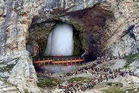
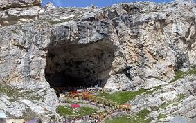

Vaishno Devi Temple
Location: Trikuta Hills, Katra, Jammu and Kashmir (approx. 1,585 meters elevation)
Deity: Goddess Vaishno Devi (Mahakali, Mahalakshmi, Mahasaraswati)
Significance: One of the 108 Shakti Peethas; believed to be where the skull of Sati fell
Pilgrimage: 12-km trek from Katra; attracts millions yearly, especially during Navaratri
Sanctum: Three natural rock formations (Pindies) representing the three goddesses
Administration: Managed by Shri Mata Vaishno Devi Shrine Board (SMVDSB) since 1986
Festivals: Celebrated grandly during Navaratri and Diwali
Legends: Associated with Mahabharata—Arjuna worshipped here before the Kurukshetra war
Access: Reachable via trekking, ponies, palanquins, or helicopter
Amarnath Cave Temple


Location: Anantnag district, Jammu and Kashmir (approx. 3,888 meters altitude)
Deity: Lord Shiva (naturally forming ice Shiva Lingam)
Significance: Site where Shiva revealed the secret of immortality (Amar Katha)
Pilgrimage: Annual Yatra during July–August; challenging trek attracts thousands
Access Routes: Via Pahalgam route (45 km) or Baltal route (14 km)
Mythology: Shiva narrated Amar Katha here; immortal pigeons are believed to be spotted
Administration: Managed by the Shri Amarnathji Shrine Board